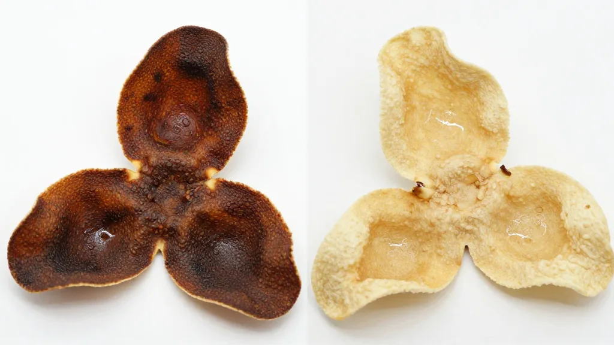
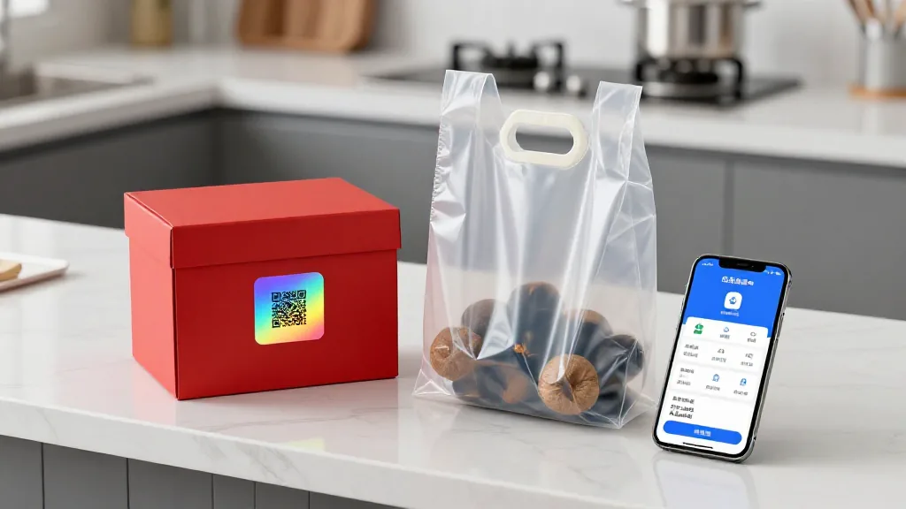

一塊皮的江湖
清晨六點，茶坑村的柑園裡，露水還掛在茶枝柑的青翠果皮上。遠處熊子塔的輪廓在晨霧中若隱若現，七十三歲的老師傅陳偉南已經蹲在柑樹下，用指尖輕輕摩挲著果皮的油室。他常說：「望聞刮嚐四步走，假皮難逃一雙手。」
二〇二五年，新會陳皮全產業鏈總產值突破283億元，帶動超10萬人增收。數字光鮮，背後的江湖卻暗流湧動。電商平台上，標著「新會陳皮」的商品，每斤價格從數十元到兩萬多元不等，差距上百倍。調研數據顯示，超過八成消費者根本分不清陳皮年份。
「香氣這東西，騙不了人。」陳董說，「新會陳皮的香氣是歲月堆出來的，工藝皮做舊，只能模仿外形，香氣層次是模仿不來的。」
望：看穿皮相
鑑別新會陳皮，第一步是望。
正宗廣陳皮，三瓣相連，片張寬大，反卷，厚薄均勻，約一毫米。油室大而密集，對光視之，透明清晰，表皮有豬鬃紋——那是油室在光線下呈現的獨特紋理，是新會茶枝柑特有的標記。內囊蓬鬆自然，年份高的，內囊會自然剝落，呈鬆浮狀態。
假皮呢？片张小而碎，厚薄不一，油室稀疏且大小不均，有的甚至沒有油室。染色的「工藝皮」顏色過於均勻、暗沉，呈現不自然的黑褐色，用濕紙巾輕輕擦拭，紙巾會沾上黃色或褐色。

聞：香氣不會騙人
聞，是鑑別陳皮的第二關。
不同年份的陳皮，香氣層次分明：3至5年，柑香明顯，帶刺鼻的果酸味；10至20年，清香撲鼻；20至40年，甘香醇厚，有老藥材的味道；50年以上，陳香醇舊撲面而來，藥香濃郁，回甘悠長。
陳偉南老人說，從前沒有溯源碼的時候，他只看三點：皮形是否三瓣完整、油室是否透光、內囊是否鬆浮。「符合這三樣，基本不會走眼。現在有了六真標準加持的溯源碼，就更保險了。」
刮：指甲下的真相
第三步，用指甲輕輕刮表皮。年分越短，油光越明顯，指甲刮過，油室滲出清亮的油點，帶著濃郁的柑香。年分越長的陳皮，油光漸淡，這是因為隨著陳化時間的推移，揮發油成分在緩慢轉化、聚合。
這個方法簡單粗暴，卻極為有效。染色皮和外塊冒充皮，用指甲刮，油光暗淡甚至沒有。
「陳皮是最誠實的東西，」滢滢姐說，「時間花在什麼地方，皮會告訴你。急不得，要等得起。真正的價值，從來都是時間賦予的。」
嚐：入口知真偽
最後一步，嚐。好陳皮入口甘香醇滑，回甘明顯，沖泡十幾次，湯色依舊金黃通透，香氣四溢。假皮的滋味則截然不同：熏硫的陳皮入口酸澀，沒有回甘；染色皮的茶湯顏色暗沉，口感寡淡。

收藏：從新皮到老皮的门道
新會民間傳統：每年三月、六月、九月都要將陳皮取出晾曬。透氣陶罐或紫砂缸為佳，讓陳皮能夠「呼吸」，在季節變換中緩慢轉化。絕對不能用膠袋——膠袋透氣性差，梅雨季節水分無法散發，極易發霉。
「陳皮越陳越好」這句話要正確理解。三年以上的陳皮，藥用價值趨於穩定，十年以上的收藏價值更高。但前提是儲存得當。霉變的陳皮，產生了黃麴霉毒素，是國際公認的強致癌物，絕對不可食用。
「買陳皮，不能只圖便宜。一分錢一分貨，是這個市場最誠實的規則。」滢滢姐說，「下次買陳皮，記得帶上一把小指甲鉗——不是用來剪陳皮，是用來輕輕颳一颳。真的新會陳皮，不會讓你的嘴巴撒謊。」
願你在這塊「一兩陳皮一兩金，百年陳皮勝黃金」的嶺南珍寶裡，找到屬於自己的那一片光陰的味道。想系統學鑑別，加滢滢微信，天馬村、茶坑村、梅江村核心產區任你選。每天早上 7 點到中午，來滢滢直播間看看真正的曬皮場；想了解行業脈絡，看看中秋前夕產業變局。